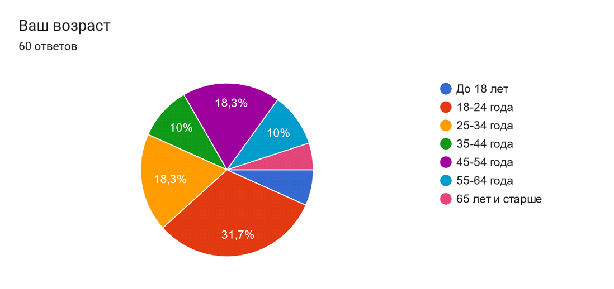
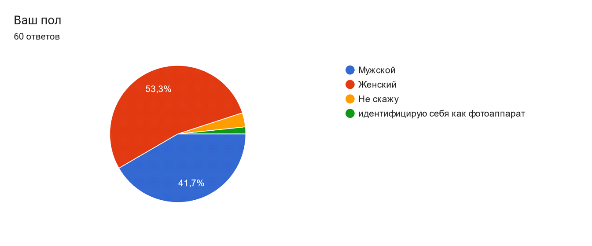
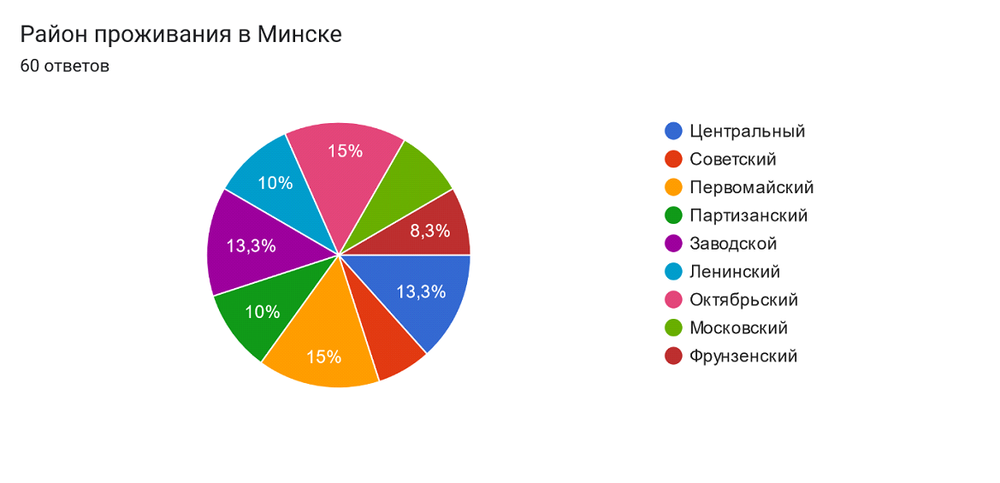

Название и цели лабораторной работы 1
Цели работы:
- Изучить основные принципы и методы проектирования человеко-машинных интерфейсов
- Освоить практические навыки проведения исследования пользователей и предметной области
- Проанализировать существующие решения и выявить проблемы в области онлайн-записи к врачу
- Разработать профили пользователей, задач и среды, чтобы понять потребности и контекст использования системы
- Создать персонажи и сценарии взаимодействия с системой, чтобы продемонстрировать пользовательский путь и необходимый функционал
- Спроектировать объектную модель системы, определить ее основные компоненты и связи между ними
- Разработать стратегию дизайна, которая учтет интересы всех заинтересованных сторон
- Описать текущие бизнес-процессы и выявить возможности для их оптимизации
В результате выполнения работы студент должен:
- Понимать основные принципы человеко-центрированного дизайна
- Уметь проводить анализ пользователей, задач и среды
- Уметь проектировать объектную модель системы
- Уметь разрабатывать стратегию дизайна
- Уметь описывать бизнес-процессы
- Приобрести практические навыки, необходимые для проектирования удобных и эффективных пользовательских интерфейсов
Выбор темы и постановка задачи
Социальная задача:
Создание удобного и доступного инструмента для записи на прием к врачу в поликлинике, который позволит:
- Сократить время ожидания в очереди за талонами
- Упростить процесс записи на прием для всех категорий граждан, включая пожилых людей и людей с ограниченными возможностями
- Повысить эффективность работы регистратуры и врачей за счет оптимизации потока пациентов
Структура данных
- Информация о пользователях:
- Пациенты: ФИО, дата рождения, пол, адрес, контактные данные, полис ОМС, история посещений.
- Врачи: ФИО, специальность, квалификация, фото, график работы, доступные временные слоты для записи.
- Регистраторы: ФИО, контактные данные, права доступа.
- Информация о поликлинике:
- Отделения: наименование, список врачей, график работы.
- Кабинеты: номер, отделение, врач.
- Информация о талонах:
- Дата и время приема.
- Врач.
- Специальность.
- Пациент.
- Статус (забронирован, доступен, отменен).
Структура деятельности
- Основные сценарии использования:
- Для пациентов:
- Поиск врача по специальности, ФИО, отделению
- Просмотр графика работы врача и доступных временных слотов
- Запись на прием онлайн с выбором даты и времени
- Отмена записи
- Просмотр истории своих записей
- Оценка качества оказанных услуг
- Получение уведомлений о предстоящих приемах
- Для врачей:
- Просмотр графика работы и списка записанных пациентов
- Внесение результатов приема в электронную медицинскую карту пациента
- Для регистраторов:
- Добавление, редактирование и удаление информации о врачах, отделениях, кабинетах
- Управление очередью и вызов пациентов на прием
- Формирование отчетов
- Дополнительные функции:
- Интеграция с электронной медицинской картой
- Возможность вызова врача на дом
- Онлайн-консультации с врачами
Требования к проектированию физической инфраструктуры
- Мобильное приложение:
- Должно быть доступно на платформах Android и iOS
- Обеспечивать быструю и удобную навигацию
- Иметь простой и понятный интерфейс
- Работать в условиях ограниченного интернет-соединения
- Использовать push-уведомления для информирования о записи и ее изменениях
- Веб-приложение:
- Адаптивный дизайн для корректного отображения на различных устройствах
- Высокая скорость загрузки страниц
- Интеграция с платежными системами (для платных услуг, например, онлайн-консультаций)
- Высокий уровень безопасности данных пользователей
Анализ конкурентов
Список конкурентов:
- TALON.BY: крупнейший портал Беларуси по онлайн-записи к врачам. Охватывает большинство государственных и частных поликлиник Минска
- 131.by: сервис онлайн-записи к врачам от Министерства здравоохранения Республики Беларусь, доступен в Минске
- doctora.by: платформа онлайн-записи к врачам в частных медицинских центрах Минска
- infodoktor.by: сервис поиска врачей и записи на прием в Минске, преимущественно частные клиники
- Мобильные приложения отдельных крупных частных медицинских центров (например, "ЛОДЭ", "Синлаб" и др.)
- Горячие линии поликлиник: запись по телефону
- Инфокиоски в поликлиниках: терминалы самообслуживания для записи на прием
- DocPlanner (ZnanyLekarz): международная платформа поиска врачей и записи на прием, представлена в Беларуси
- Сервисы онлайн-консультаций: Яндекс.Здоровье, СберЗдоровье (не предоставляют запись в гос. поликлиники, но являются альтернативой очному посещению)
Объем трафика и динамика развития:
- TALON.BY: лидер по трафику, стабильно высокий
- 131.by: имеет потенциал роста, так как поддерживается государством, но пока уступает по трафику TALON.BY
- doctora.by, infodoktor.by: обладают меньшим объемом трафика, ориентированы на сегмент частных клиник
- Приложения отдельных мед.центров: трафик ограничен пациентами конкретной клиники
- Горячие линии, инфокиоски: данные по трафику недоступны, но можно предположить, что ими пользуются люди, не имеющие доступа к онлайн-сервисам
Региональная популярность платформ:
- Веб-сайты: основной канал для TALON.BY, 131.by, doctora.by, infodoktor.by
- Мобильные приложения: активно развиваются TALON.BY, doctora.by, а также частными клиниками
- Социальные сети: используются для продвижения и информирования, но не для записи на прием
- Контекстная реклама: применяется всеми онлайн-сервисами
Потребительский портрет клиентов:
- TALON.BY, 131.by: широкая аудитория, разные возрастные группы, ищут удобства и экономию времени
- doctora.by, infodoktor.by: ориентированы на пользователей, предпочитающих частные клиники, готовых платить за комфорт и дополнительные услуги
- Приложения мед. центров: лояльные пациенты конкретной клиники, ценят персонализацию и доступ к своим данным
- Горячие линии, инфокиоски: люди старшего возраста, не пользующиеся интернетом, пациенты с низким уровнем цифровой грамотности
Выводы:
- Рынок онлайн-записи к врачам в Минске конкурентен
- Лидерами являются TALON.BY и 131.by, охватывающие большинство государственных и частных клиник
- Наблюдается тенденция развития мобильных приложений
- Важно учитывать потребности различных сегментов аудитории, в том числе с низким уровнем цифровой грамотности
Рекомендации для проектируемой системы:
- Акцент на удобстве и простоте: превзойти конкурентов по удобству использования, скорости работы, интуитивно понятному интерфейсу
- Широкая функциональность: предоставить пользователям больше возможностей, чем просто запись на прием (например, онлайн-консультации, вызов врача на дом, интеграция с электронной медицинской картой)
- Ориентация на мобильные технологии: разработать удобное и функциональное мобильное приложение
- Активное продвижение: использовать различные каналы привлечения пользователей (контекстная реклама, социальные сети, партнерские программы)
Проведение опроса
В опросе Google Forms о системе онлайн-записи к врачу были следующие вопросы:
-
"Ваш возраст"
- Тип вопроса: Выбор из списка (Dropdown)
-
Варианты ответа:
- До 18 лет
- 18-24 года
- 25-34 года
- 35-44 года
- 45-54 года
- 55-64 года
- 65 лет и старше
-
"Ваш пол"
- Тип вопроса: Выбор из списка (Dropdown)
-
Варианты ответа:
- Мужской
- Женский
- Не скажу
- [Открытый вариант для самоидентификации]
-
"Район проживания в Минске"
- Тип вопроса: Выбор из списка (Dropdown)
-
Варианты ответа:
- Центральный
- Советский
- Первомайский
- Партизанский
- Заводской
- Ленинский
- Октябрьский
- Московский
- Фрунзенский
-
"Как часто Вы обращаетесь в поликлинику?"
- Тип вопроса: Выбор из списка (Dropdown)
-
Варианты ответа:
- Часто (раз в месяц и чаще)
- Иногда (несколько раз в год)
- Редко (раз в год и реже)
-
"Как Вы обычно записываетесь на прием к врачу?"
- Тип вопроса: Множественный выбор (Checkboxes)
-
Варианты ответа:
- По телефону
- Лично в регистратуре
- Через интернет
-
"Если Вы записываетесь через интернет, какие сервисы используете?"
- Тип вопроса: Множественный выбор (Checkboxes)
-
Варианты ответа:
- talon.by
- 131.by
- doctora.by
- Сайт поликлиники
- [Открытый вариант для указания других сервисов]
-
"Удовлетворены ли Вы процессом записи на прием к врачу?"
- Тип вопроса: Шкала (Linear Scale)
-
Варианты ответа:
- От 1 (крайне неудовлетворен) до 5 (крайне удовлетворен)
-
"С какими трудностями Вы сталкиваетесь при записи на прием?"
- Тип вопроса: Множественный выбор (Checkboxes)
-
Варианты ответа:
- Трудно дозвониться в регистратуру
- Нет свободных талонов
- Неудобный график работы врачей
- Сложно найти нужную информацию на сайте
- [Открытый вариант для описания других трудностей]
-
"Что бы Вы хотели улучшить в процессе записи на прием к врачу?"
- Тип вопроса: Короткий ответ (Short answer)
-
Варианты ответа:
-
"Какие функции Вы считаете наиболее важными для системы онлайн-записи?"
- Тип вопроса: Множественный выбор (Checkboxes)
-
Варианты ответа:
- Просмотр расписания врачей
- Онлайн-бронирование талонов
- Отмена и перенос записи
- Напоминания о приеме
- Оценка качества услуг
- Ведение электронной медицинской карты
- [Открытый вариант для указания других функций]
-
"Каким устройством Вам было бы удобнее пользоваться для записи на прием?"
- Тип вопроса: Выбор из списка (Dropdown).
-
Варианты ответа:
-
"Готовы ли Вы использовать мобильное приложение для записи на прием к врачу?"
- Тип вопроса: Выбор из списка (Dropdown)
-
Варианты ответа:
-
"Какую информацию о враче Вы бы хотели видеть в системе?"
- Тип вопроса: Множественный выбор (Checkboxes)
-
Варианты ответа:
- Образование
- Опыт работы
- Отзывы пациентов
- Рейтинг
- Фото
- [Открытый вариант для указания другой информации]
-
"Что бы Вас привлекло в использовании новой системы онлайн-записи?"
- Тип вопроса: Короткий ответ (Short answer)
-
Варианты ответа:
Распространение ссылки на опросник

Результаты опроса





Анализ результатов опроса по системе онлайн-записи в поликлинику
Общая картина:
Проблемы текущих решений:
- Дефицит талонов: ключевая проблема, вызывающая недовольство
- Неудобный график работы врачей: ограничивает возможности записи
- Сложности с навигацией и поиском информации: на сайтах поликлиник
- Отсутствие некоторых востребованных функций: онлайн-отмена, уведомления, отзывы о врачах
Портрет пользователя:
- "Продвинутый": молодежь, активно использует интернет и мобильные приложения, ожидает широкий функционал, ценит удобство и скорость
- "Осторожный": средний возраст, использует интернет, но предпочитает проверенные ресурсы (talon.by, сайт поликлиники), ожидает надежности и простоты
- "Консервативный": старшее поколение, ограниченно использует интернет, предпочитает телефон или личный визит, нуждается в простом и понятном интерфейсе
Рекомендации для проектируемой системы:
- Решить проблему доступности талонов: внедрить систему динамического распределения слотов, электронную очередь, запись на конкретное время
- Обеспечить удобный график: предусмотреть возможность записи в вечернее время, выходные дни
- Разработать интуитивно понятный интерфейс: простой поиск, фильтры, понятная структура меню
- Сделать акцент на мобильную версию: удобное приложение с push-уведомлениями, интеграцией с календарем
- Предоставить расширенную информацию о врачах: образование, опыт, отзывы, рейтинг
- Реализовать востребованные функции: онлайн-отмена, напоминания, оценка качества услуг, интеграция с электронной мед. картой
Дополнительные возможности:
- Онлайн-консультации: востребованная услуга, особенно в условиях пандемии
- Геолокация: поможет найти ближайшую поликлинику или врача
- Чат-бот: автоматизирует ответы на часто задаваемые вопросы
Выводы:
Результаты опроса подтверждают актуальность разработки удобной и функциональной системы онлайн-записи в поликлиники
Важно:
- Уделить особое внимание потребностям разных категорий пользователей
- Обеспечить высокий уровень безопасности и конфиденциальности данных
- Проводить постоянную работу над улучшением функциональности и удобства системы
Анализ данных
Объединив данные анализа конкурентов и результатов опроса, мы получаем более полное представление о потребностях пользователей и условиях использования будущей системы онлайн-записи в поликлинику
Ключевые проблемы:
- Сложности с записью
- Нехватка информации
Потребности пользователей:
- Удобство и скорость
- Доступность информации
- Гибкость и контроль
Задачи пользователей:
- Найти нужного врача: поиск по специальности, ФИО, району, рейтингу, отзывам
- Записаться на прием: выбрать удобную дату и время, подтвердить запись
- Управлять записью: отменить или перенести запись, получить напоминание
- Получить информацию: о враче, процедуре приема, подготовке к визиту
- Оценить качество услуг: оставить отзыв о враче, поделиться опытом
Контекст использования:
- Место: дома, на работе, в дороге (с помощью смартфона)
- Время: в любое удобное время, в том числе вечером и в выходные
- Эмоциональное состояние: может быть разным: от спокойного планирования до срочной необходимости найти врача.
Сегментация пользователей:
- "Цифровые" пациенты: активно используют интернет и мобильные технологии, ожидают удобства, скорости и широкого функционала
- "Традиционные" пациенты: предпочитают привычные каналы (телефон, личный визит), нуждаются в простом и понятном интерфейсе, помощи с навигацией
Выводы:
Новая система должна быть
- Удобной и интуитивно понятной для всех категорий пользователей
- Функциональной: предоставлять все необходимые функции для записи, управления и получения информации
- Доступной: работать на разных устройствах, в том числе на смартфонах, с учетом возможных ограничений интернет-соединения
- Информативной: предоставлять пользователям полную информацию о врачах, услугах и процессе записи
Важные моменты:
- Проектировать интерфейс с учетом особенностей каждого сегмента пользователей
- Обеспечить высокий уровень безопасности данных
- Интегрировать систему с электронной медицинской картой для удобства пациентов и врачей
Данный анализ поможет сфокусироваться на ключевых потребностях пользователей и создать систему, которая будет востребованной и эффективной
Разработка профилей
"Цифровой пациент"
- Социально-демографические характеристики: возраст 18-45 лет, активный пользователь интернета и мобильных технологий, проживает в Минске
- Навыки работы с компьютером: уверенный пользователь, владеет компьютером, смартфоном, использует различные приложения и сервисы
- Мотивационно-целевая среда: ценит свое время, комфорт и удобство. Предпочитает решать задачи онлайн, не тратя время на звонки и визиты
- Рабочая среда: работает в офисе или удаленно, имеет доступ к компьютеру и интернету в течение дня
- Особенности взаимодействия: использует мобильное приложение для записи, ожидает быстрой работы, понятного интерфейса, интерактивных функций (онлайн-отмена, уведомления, геолокация).
"Традиционный пациент"
- Социально-демографические характеристики: возраст 45+ лет, ограниченный опыт использования интернета, может проживать как в Минске, так и в пригороде
- Навыки работы с компьютером: пользователь начального уровня, использует компьютер для простых задач (поиск информации, общение в мессенджерах)
- Мотивационно-целевая среда: предпочитает привычные способы записи (телефон, личный визит), может испытывать сложности с онлайн-сервисами
- Рабочая среда: может быть пенсионером, работать на производстве, в сфере обслуживания. Доступ к компьютеру и интернету может быть ограничен
- Особенности взаимодействия: использует веб-сайт, предпочитает простой интерфейс, крупные шрифты, минимум действий для записи. Нуждается в подсказках и инструкциях
"Заботливый родитель"
- Социально-демографические характеристики: возраст 25-45 лет, родитель ребенка, активно использует интернет и мобильные приложения для решения различных задач (покупки, общение, развлечения)
- Навыки работы с компьютером: уверенный пользователь, быстро осваивает новые приложения и сервисы
- Мотивационно-целевая среда: стремится обеспечить ребенку качественную медицинскую помощь, ценит время и удобство, ищет надежную информацию
- Рабочая среда: может работать как в офисе, так и удаленно, имеет доступ к компьютеру и интернету в течение дня
- Особенности взаимодействия: использует мобильное приложение, ищет удобный функционал для записи ребенка (возможность прикрепить данные полиса, добавить несколько профилей детей, получать напоминания)
"Пациент с ограниченными возможностями"
- Социально-демографические характеристики: любая возрастная группа, имеет особенности здоровья, которые могут ограничивать взаимодействие с компьютером
- Навыки работы с компьютером: могут быть разными, в зависимости от типа ограничений
- Мотивационно-целевая среда: нуждается в доступном и удобном способе записи на прием
- Рабочая среда: может быть разной, в зависимости от типа ограничений
- Особенности взаимодействия: требует специальных функций accessibility (крупные шрифты, контрастные цвета, озвучивание текста, управление с помощью клавиатуры или голосовых команд)
Важно:
- При проектировании системы необходимо учитывать потребности всех категорий пользователей, обеспечивая удобство и доступность для каждого
- Проводить тестирование приложения с представителями разных групп пользователей для получения обратной связи и улучшения системы
Профили задач пользователей системы онлайн-записи к врачу
Поиск и выбор врача
- Вид деятельности: Поиск информации о врачах и выбор подходящего специалиста
- Структура деятельности: Определение потребности, Поиск врача, Просмотр профиля врача, Сравнение врачей, Выбор врача